2.請假資料
2.1點選左側【請假資料】，使用下拉式選單選擇【公司】，參考圖G-2。
2.2點選選擇檔案 來選擇所需要上傳的檔案，選擇需要檔案後，點選上傳按鍵
即可，
參考圖G-2。
(※注意請先下載"請假資料範本"請使用範本格式上傳檔案)
HRMS人力資源系統
柒、資料交換管理 (※注意，【新增】、【刪除】、【編輯】、【查詢】等功能限具有相應功能權限者可使用。)
A.資料上傳管理
1.卡鐘資料
1.1點選左側【卡鐘資料】，使用下拉式選單選擇【公司】，參考圖G-1。
1.2點選選擇檔案 來選擇所需要上傳的檔案，選擇需要檔案後，點選上傳按鍵即可。
，參考圖G-1。
(※注意請先下載"卡鐘資料範本"，請使用範本格式上傳檔案)
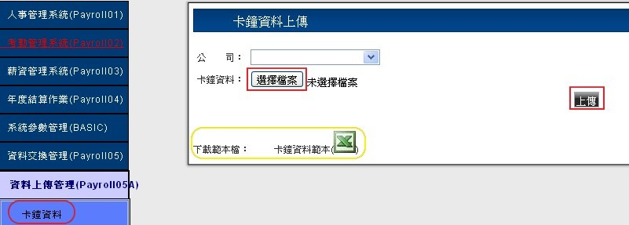(圖G-1)
2.請假資料
2.1點選左側【請假資料】，使用下拉式選單選擇【公司】，參考圖G-2。
2.2點選選擇檔案 來選擇所需要上傳的檔案，選擇需要檔案後，點選上傳按鍵
參考圖G-2。
(※注意請先下載"請假資料範本"請使用範本格式上傳檔案)
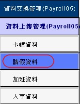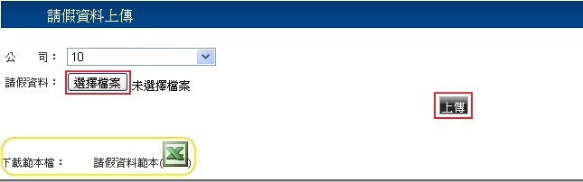(圖G-2)
B.資料匯入管理
1.卡鐘資料
1.1點選左側【卡鐘資料】，使用下拉式選單選擇【公司】、【記薪年月】點選確認轉換資料，即可完成轉換，參考圖G-5。
1.2若是要清除轉換資料，選擇清除轉換資料，即可完成清除，參考圖G-5。
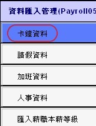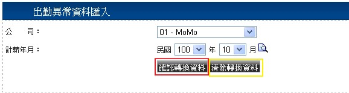(圖G-5)
2.請假資料
2.1點選左側【請假資料】，使用下拉式選單選擇【公司】、【假別】、【排序】、【記薪年月】點選確認轉換資料，即可完成轉換，參考圖G-6。
2.2若是要清除轉換資料，選擇清除轉換資料，即可完成清除，參考圖G-6。
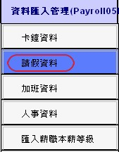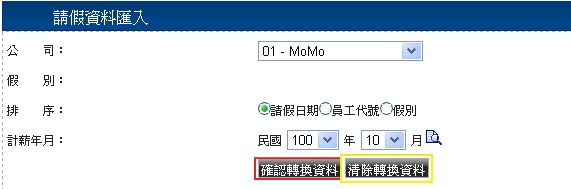(圖G-6)
3.加班資料
3.1點選左側【加班資料】，使用下拉式選單選擇【公司】點選確認轉換資料，即可完成轉換，
參考圖G-7。3.2若是要清除轉換資料，選擇清除轉換資料，即可完成清除，參考圖G-7。
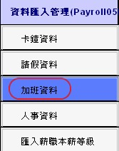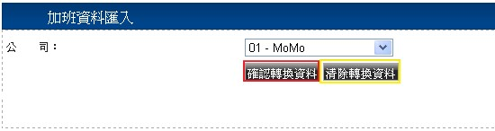(圖G-7)
4.人事資料
4.1點選左側【人事資料】，使用下拉式選單選擇【公司】點選確認轉換資料，即可完成轉換，
參考圖G-8。4.2若是要清除轉換資料，選擇清除轉換資料，即可完成清除，參考圖G-8。
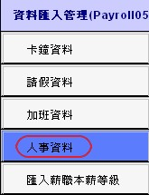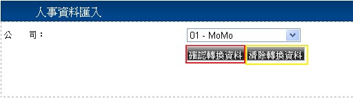(圖G-8)
5.匯入薪資本薪等級
5.1 點選左側【匯入薪職本薪等級資料】，參考圖G-9。
5.2 點選，選擇需要匯入的檔案資料後，選擇【匯入薪職等級表】與【匯入本薪等級表】即可匯入檔案資料，參考圖G-9。
5.3若是要恢復其預設值，選擇【恢復薪職等級預設值】與【恢復本薪等級預設值】即可恢復檔案資料。
，參考圖G-9。
(※注意請先下載"請假資料範本"請使用範本格式上傳檔案)
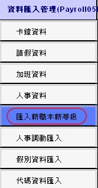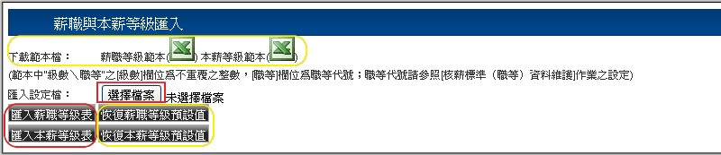(圖G-9)
6.人事調動匯入
6.1點選左側【人事調動匯入】，使用下拉式選單選擇【公司】點選確認轉換資料，即可完成轉換，
參考圖G-10。6.2若是要清除轉換資料，選擇清除轉換資料，即可完成清除，參考圖G-10。
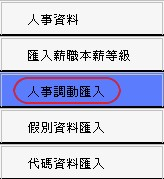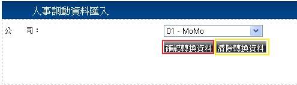(圖G-10)
7.假別資料匯入
7.1點選左側【假別資料匯入】，使用下拉式選單選擇【公司】點選確認轉換資料，即可完成轉換，
參考圖G-11。7.2若是要清除轉換資料，選擇清除轉換資料，即可完成清除，參考圖G-11。
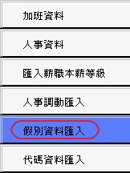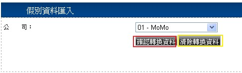(圖G-11)
8.代碼資料匯入
7.1點選左側【代碼資料匯入】，點選確認轉換資料，即可完成轉換，參考圖G-12。
7.2若是要清除轉換資料，選擇清除轉換資料，即可完成清除，參考圖G-12。
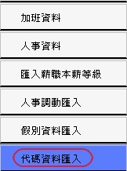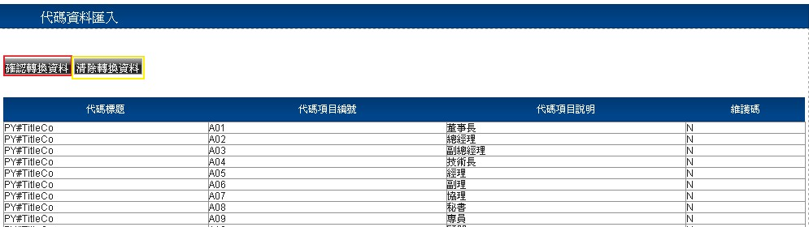(圖G-12)
C.薪資轉匯作業
1.世華格式
1.1點選左側【世華格式】，使用下拉式選單選擇【公司】、【計薪年月】、【期別】、輸入【轉帳日期】、【公司備註】、【行員備註】、【權數】點選查詢，即可查詢已建檔的資料，參考圖G-13。
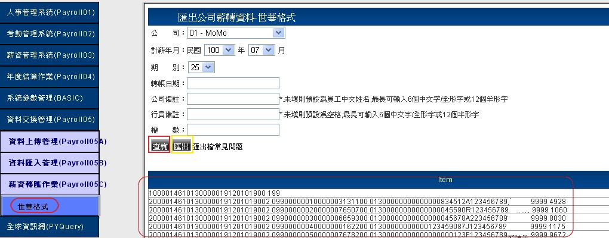
(圖G-13)